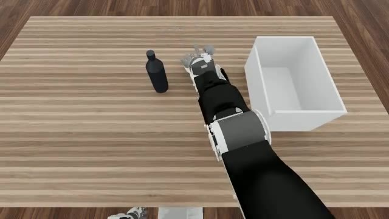
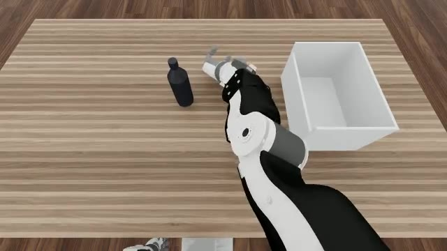

01Result
Closed loop, ego head-camera view. The arm travels straight from rest to the bottle and the fingers arrive on the object — the "sensible motion" milestone (Tier-0) this campaign set out to hit.




02Setup
Goal: make Dex-PointWAM succeed in sim "like DPP" — at minimum a sensible reach (Tier-0),
ideally DPP-level success_at_end (Tier-1), then iterate up (Tier-2).
| Component | Value |
|---|---|
| Model | PointWAM dex · EgoDex-pretrained → PnP-500 finetune (pnp500_ft_ext1) |
| Contact head | contact_ft/model-best.pt · robot_l2 0.0349 |
| Benchmark | OpenArm Isaac pick-and-place · bottle · 24 episodes |
| Control | 10 Hz prediction / 20 Hz control · each step held ×2 |
| Frame | camera-frame (WDS extrinsic = I, scene Z = depth) |
| Baseline | canonical DPP · same objects, seed, KeypointIK, start pose |
| Launcher | scripts/eval_pointwam_rlwrld.sbatch |
03Results vs baseline
Mid-course correction: the DPP number we were chasing (70%) is a single non-reproducible
README row. Reproducible measurements cluster around 27%, swinging with num_envs
(PhysX parallel-solver non-determinism, flagged by the benchmark's own README).
success_at_end, bottle. Sim stack byte-identical between the two policies (versions + physics config) — the sim faithfully reproduces the reference. Real DPP deployment with SAM3 + ZED noise lands at 6–12.5% for scale.
Tier scorecard
- ✓Tier-0 — sensible reach. Purposeful approach instead of spinning in place; net predicted wrist displacement converged 14 cm → 4 cm.
- ✗Tier-1 — DPP-level success. 0/24. Fingers reach and even touch (11/24 nudge or partially lift the bottle) but close beside it.
- ·Tier-2 — iterate up. Not reached; blocked on Tier-1.
04Diagnosis — why the grasp fails
The predicted hand orientation is palm-up, so a standing bottle can't be grasped no matter how the grip closes. Before blaming the model, every deploy-side cause was ruled out one by one:
- ✓Sim is correct. Canonical DPP in our sim = 17–29%, matching seunghoon's own reruns (~27%).
- ✓Coordinate frame is right. Training data is camera-frame; feeding the real world-frame extrinsic broke the reach — identity is correct.
- ✓Camera geometry matches training. PnP-500 table normal 25.6° off optical axis vs sim head camera pitched 25.5° — same viewpoint.
- ✓Keypoint order & chirality correct. Traced sim → obs → bridge → training converter → readback. No transposed fingers, no left/right swap.
- ✓Same IK + start pose as DPP. DPP grasps fine with the identical KeypointIK and initial state — the divergence is purely the predicted trajectory.
- →Conclusion: the model's prediction. Gross translation (reach) survives real→sim OOD; fine grasp orientation does not.
05Timeline
-
2026-07-22
Rotate-in-place collapse — 0/24 on every object
Hand spins, wrist never translates. Looked like a training failure; turned out to be two deploy-side bugs masking the model's real behavior.
before_rotate.mp4 · the starting point -
2026-07-28
Two deploy fixes revive the reach — Tier-0 met
Rate bug: a 1.0 s / 10-step chunk replayed in 0.5 s (
si = t % Q) → each predicted step now held 2 control steps. Phantom-hand mask: the bimanual model was attending a zero-padded idle hand; masking viarobot_existsis what actually revived the reach. Added per-chunk[pwam-disp]telemetry: 14 cm → 4 cm. -
2026-07-28
Contact head finetuned + grip wired — grasp still 0/24
Per-finger contact head (
contact_ft, robot_l2 3.5 cm) drives a DPP-style grip ramp. The head fires strongly, but the fist closes beside the bottle — grip is not the bottleneck. -
2026-07-29
Deploy causes ruled out · baseline recalibrated · campaign closed
Sim, frame, camera geometry, keypoint order, and IK all verified correct; DPP baseline corrected 70% → ≈27%. Verdict: palm-up grasp = model-level real→sim OOD. Closed at Tier-0 by decision.
06If resumed
- ·Domain-randomize the real training. Point-cloud jitter/dropout (currently absent) + a longer grasp-focused PnP-500 finetune, to make grasp orientation robust to sim-cloud OOD.
- ·Change the output space. DPP-style raw/absolute-coordinate head or an explicit grasp-orientation loss — a model-code change.
- ·In-domain sim demos. Blocked today: no scripted/teleop demonstrations of these objects exist to finetune on.
07Artifacts & repro
- ·Checkpoints dpp_ckpts_1p9s/pnp500_ft_ext1/model-best.pt (reach) · dexpointwam/contact_ft/model-best.pt (contact head)
- ·Deploy code openarm_sim/parallel_eval/policy_pointwam.py · PointWAM/deploy/dpp_bridge_server.py
- ·Eval launcher scripts/eval_pointwam_rlwrld.sbatch — env: PWAM_CKPT · PWAM_USE_CONTACT_GRIP · PWAM_GRIP_ARRIVE_CM · PWAM_TAG · PWAM_REAL_EXTRINSICS
- ·Full chronological report openarm-sim/DEXPOINTWAM_SIM_CAMPAIGN.md
08Correction · added 2026-07-31
Appended, not edited. This entry's headline — “reach transfers, grasp pose doesn't” — is struck in both halves. The reach half was never measured against the object, and when it finally was, the arm does not go to the object at all.
- ✗Tier-0 was never an object-relative measurement.The claim rested on
policy_pointwam._log_reach, whose entire metric is‖wrist_end − wrist0‖— a displacement magnitude over the chunk. Its own docstring only claims to separate a zero-motion collapse from “a real reach is cm-scale”; nothing in it references the object. The ~13 cm that closed Tier-0 is equally consistent with reaching the bottle, the bin, or nothing. - ✗Measured object-relatively, the arm never reaches the bottle.A 900-step episode rendered from the ego camera with object conditioning actually enabled: the bottle sits on the left, plainly visible in every frame, and never moves; the arm moves continuously in the middle-and-right region near the destination bin and never travels to it.
obj_final_posz = 0.915 m — table height, never lifted. Filmstrip and video are in the artifacts of the object-cloud-results corrections. - ✗The palm-up diagnosis in §04 does not survive either.Commanded-versus-achieved palm rotation, from the logs this entry already cites: this policy commands −1.9° per chunk and the hand achieves +0.9° (fraction achieved −0.26); DPP commands −3.2° and achieves 0.00°. Neither policy controls palm orientation through the position-only 6-point IK, so palm angle was never a model signal to begin with.
- ·The correct question, and what it reorganises.Not “why does the grasp fail” but why is the predicted trajectory not aimed at the conditioned target object. That single failure accounts for the grip firing in empty space, the contact head firing in 32% of chunks, the object never lifting, and 0/24 across twelve cells — none of which are grasp mechanics. It also explains why six independent emulations of sim-input defects (appearance, point density, scene sparsity, cap decimation) were all null: input fidelity cannot matter to a trajectory that is not aimed at the object.
- ·What still stands.The deploy-side fixes this entry documents (the exists-mask and rate-bug corrections, the frame/extrinsic finding, the shared-harness DPP baseline of ~27%) are unaffected, as are the 0/24 measurements themselves. All of them predate the 1 cm jitter protocol, so they are not interval-comparable with anything measured after 2026-07-31.
- ✗Further note, same day: “never travels to the bottle” above is too strong — withdrawn.Object-relative instrumentation over 24 envs (validated at 93.9% against ground truth before use) shows the wrist does close on the target: 21.8 → 17.6 → 14.8 → 13.2 cm. What actually happens is a stall: the predicted closing rate decays monotonically to zero (−5.47, −3.60, −1.78, −0.02 cm per chunk) and then reverses (+1.09 at t=80, i.e. the prediction starts backing away from the target while still closing on the bin) and the fingertips never close at all (16.3, 15.5, 15.5, 15.6 cm — flat). So the hand approaches and then parks about 13–16 cm short, fingers never nearing the object. That single behaviour accounts for the per-chunk displacement decaying inside every episode, the grip firing in empty space, and the object never lifting. The earlier wording came from a single-episode video (
make_manifest(1), env 0) rather than a trajectory mean — the same instant-versus-trajectory error this log corrects elsewhere.